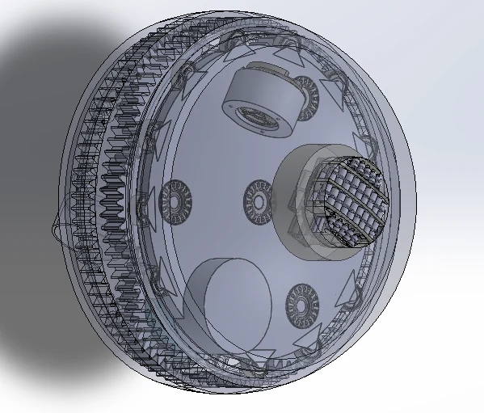

Research direction · mechanism design
Active spherical caster
A standalone, actively driven spherical-caster design, developed alongside my experiments on passive caster behavior.
- Context
- Ongoing design work · 2026
- My role
- Mechanical design and kinematic modeling
- Status
- Kinematic derivation complete
CAD in progress; prototype and control implementation next



From passive behavior to actuation
The passive-caster study raises a design question: which internal motions are important enough to control directly? A caster can change its contact state while the robot follows the same command. An active mechanism offers a way to investigate commanding those motions instead of leaving them entirely to ground contact.
The goal of this design is a standalone driven module. The current work is at the CAD and modeling stage, not a completed mobility demonstration.
What the CAD shows
The screenshots above are the actual current assembly, shown with transparent components so that the packaging remains visible. The perspective view shows the hemispherical structure and circumferential mechanism; the section view exposes the internal arrangement and the space between the two sides.
At this stage, the mechanical work is about fitting the actuation, supporting structure, and transmission into the spherical envelope while preserving the required internal rotations and contact geometry.
The geometric starting point
The passive and active designs share a geometric question: how does the current shell orientation affect the velocity generated by an internal rotation? The local model below comes from my passive split-spherical-caster notes. It is useful design context, but it is not the complete motor-to-ground mapping of the new assembly.
R is the shell radius. α describes rotation of the assembly about the common rod; β describes spin of the contacting hemisphere about its own axis. The effective spin radius is ρ = R |sin α|.
Ideal shell contact, expressed in the caster frame. The sign of β follows the kinematics notes.
Away from sin α = 0, the inverse relation gives β̇ = vy / (R sin α). The determinant is R² sin α. Simply adding actuation does not remove the geometric singularity in this model.
Model assumptions and what this does not describe
The ground is locally flat, the shell is rigid, and the center-to-contact vector is vertical. The velocity relation assumes no slip at the current shell contact. Whole-caster yaw rotates this velocity into the world frame; it is a separate coordinate.
This local model does not reproduce the detailed seam/roller contact geometry, contact switching, friction, motor dynamics, or the transmission in the active CAD. It should not be read as a full hardware simulation.
Source: Kinematics of the Passive Split Spherical Caster, §§1–5.
What comes next
The next steps are to finish the CAD, fabricate the prototype, and implement the control system. Those steps are needed before the model can be compared with the behavior of the active hardware.
The passive-caster experiments provide the motivation and a measurement approach: observe the internal state, record the realized motion, and check where the ideal contact model ceases to describe the mechanism.
The encoder-integrated passive caster is a separate measurement build for the experiments. It measures caster motion; the active design on this page is intended to command it.